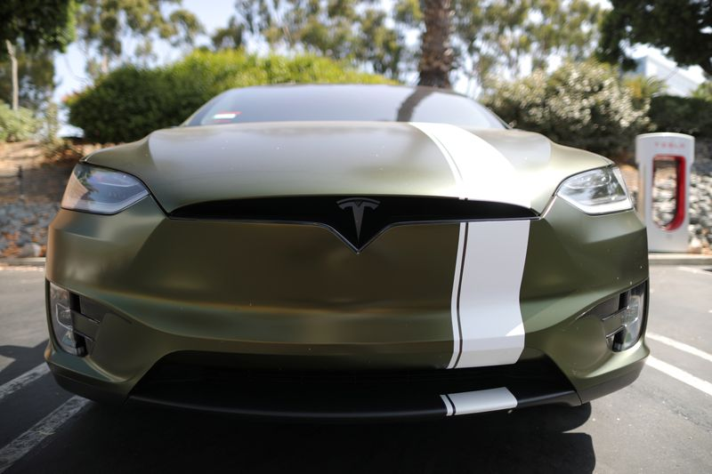

Tesla rallies after Canaccord upgrades rating, says it’s like Apple
(Reuters) – Shares of Tesla rose 3% on Monday after Canaccord Genuity raised its rating on the electric car maker to 'buy' and compared its brand to Apple.
Canaccord Genuity analyst Jed Dorsheimer upgraded Tesla to 'buy' from 'hold' and increased his price target to $1,071, the second highest among 37 analysts tracked by Refinitiv.
The company run by Elon Musk last traded at $697.
'TSLA is rapidly creating an Apple-esque ecosystem of energy products, harmonized in electrification, to become The Brand in energy storage,' Dorsheimer wrote in a client note focused on Tesla’s battery technology and residential energy products.
He compared the brand Tesla has built around its battery technology to Apple’s wildly successful 'Think Different' marketing campaign launched in the 1990s.
The latest bump in Tesla’s stock leaves it down about 1% for the year as investors await its quarterly results due in two weeks.
Last week, Tesla posted record quarterly deliveries amid strong demand in China, beating analysts’ expectations.
Tesla’s stock remains up over 500% in the past 12 months, and its $668 billion market capitalization makes it by far the most valuable carmaker, even though its production is a fraction of rivals such as Toyota Motor Corp, Volkswagen AG and General Motors Co.
When it reports its March quarter results on April 26, analysts, on average, expect a 70% jump in revenue to $10.2 billion, and net income of $504 million, up from $16 million a year ago, according to Refinitiv.
(Reporting by Noel Randewich; Editing by Bernadette Baum)
Posted On: 2021-04-12T00:00:00
Posted By: Noel Randewich

Content Date: 2021-04-12
Download Date: 2021-04-16
Document ID: L0C049UCB